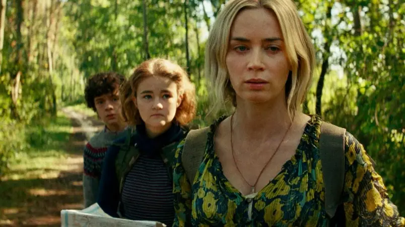

Last Night In Soho é uma das produções mais aguardadas de 2021, principalmente por ser um filme
de terror dirigido por Edgar Wright (Em Ritmo de Fuga), que é um dos diretores mais criativos da
atualidade.
Diferentemente de sua comédia de terror Todo Mundo Quase Morto, o novo filme será um terror
psicológico ambientado em Londres. No elenco nós teremos a queridinha de O Gambito da Rainha,
Anya Taylor-Joy, além de Matt Smith (Doctor Who) e Diana Rigg (Game of Thrones).
LAST NIGHT IN SOHO
ESPIRAL - O LEGADO DE JOGOS MORTAIS
ESPIRAL - O Legado de Jogos Mortais promete voltar às raízes da franquia trazendo novamente um
suspense policial combinado com os jogos sangrentos.
O enredo vai mostrar o detetive Ezekiel "Zeke" Banks (Chris Rock), que sob o comando do veterano
da polícia Marcus (Samuel L. Jackson), se une ao seu parceiro novato Willem (Max Minghella) para
desvendar uma série de assassinatos terríveis que estão acontecendo na cidade. Durante as
investigações, Zeke acaba se envolvendo no mórbido jogo do assassino.
ESPIRAL - O LEGADO DE JOGOS MORTAIS
INVOCAÇÃO DO MAL 3: A ORDEM DO DEMÔNIO
Invocação do Mal e Invocação do Mal 2 foram dois dos melhores e mais assustadores filmes de
terror lançados nos últimos anos. Por isso, espera-se que Invocação do Mal 3: A Ordem do Demônio
mantenha a qualidade e os sustos no nível mais alto. Agora a responsabilidade não está mais nas
mãos de James Wan (Sobrenatural), que deixou a direção do novo filme para Michael Chaves (A
Maldição da Chorona).
O terceiro capítulo da saga casal de investigadores paranormais Ed e Lorraine Warren promete ser
diferente dos anteriores e investigar um caso que se passa nos anos 80, da primeira pessoa a se
defender de uma acusação de homicídio com a justificativa de ter sido possuído pelo demônio.
Bizarro, não é mesmo?
INVOCAÇÃO DO MAL 3: A ORDEM DO DEMÔNIO
Um Lugar Silencioso - Parte II
A sequência do fenômeno do terror de 2018 "Um Lugar Silencioso" continua acompanhando a saga da
família Abbott para fugir das criaturas guiadas pelo som.
O primeiro longa, dirigido pelo ator John Krasinski, conhecido pela série de comédia "The
Office" e protagonizado pelo próprio e sua esposa, a atriz Emily Blunt, foi bem recebido pelo
público e pela crítica, o que gerou a continuação.

Um Lugar Silencioso - Parte II